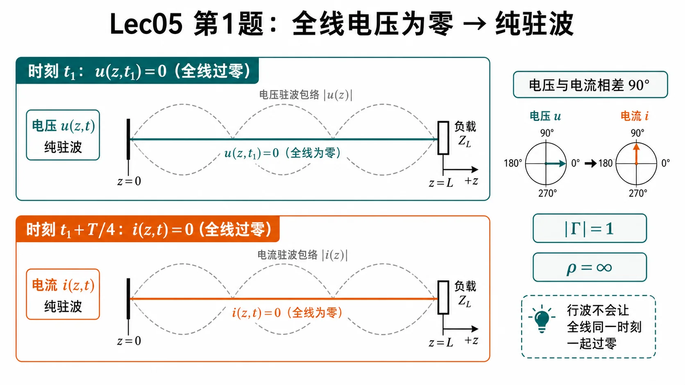
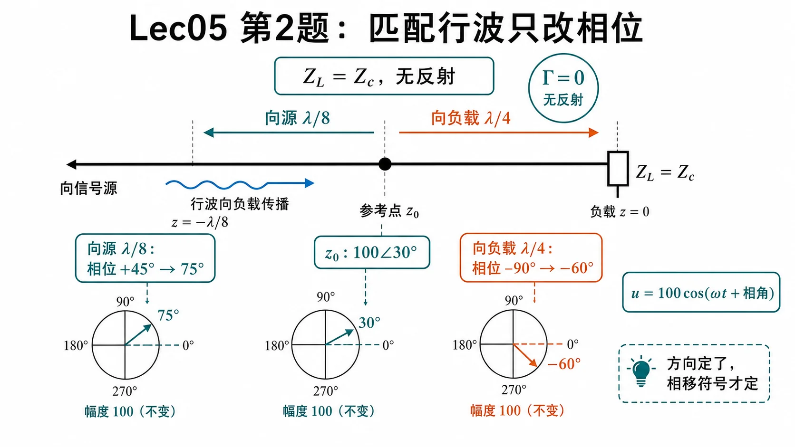
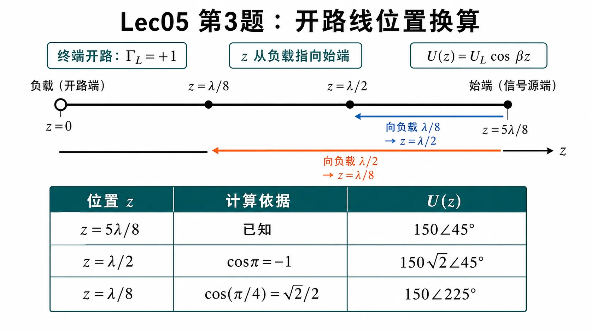
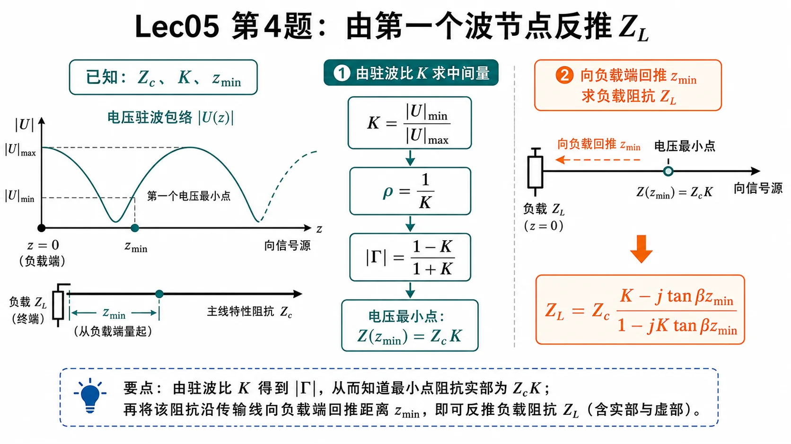
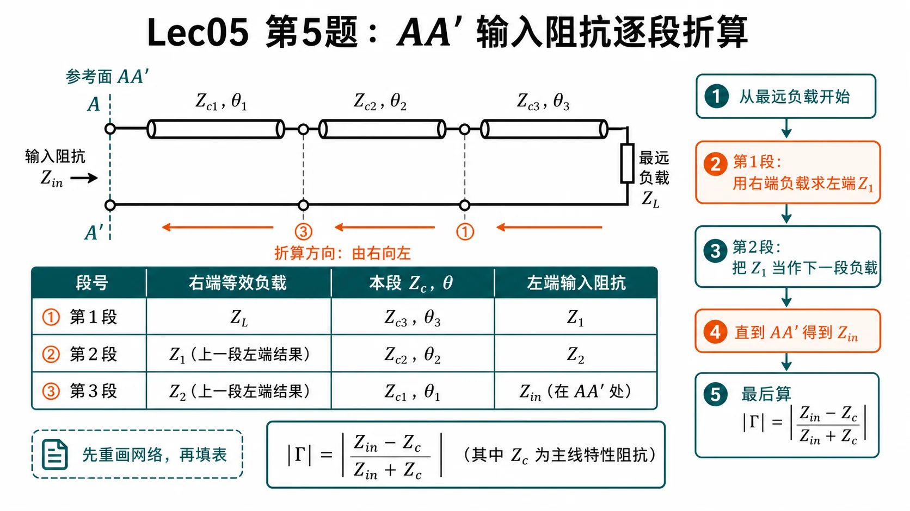
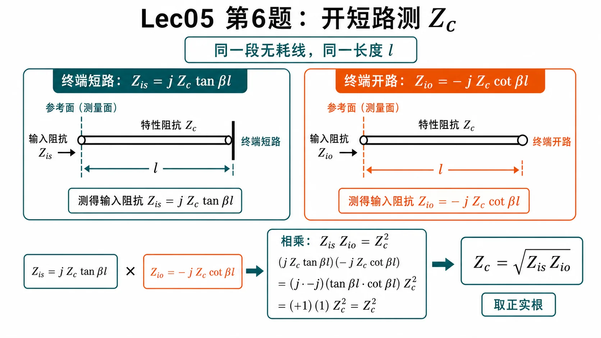

第一次作业 · Lec05§
对应知识点：05-开短路线周期性与测量
导航： 总目录 · 符号与导读 · Lec01 · Lec02 · Lec03 · Lec04 · Lec05 · 附录
Lec05 作业§
第 1 题§
（对应大纲 Lec05 作业 第 1 题；教材 §1.4 附近行驻波/纯驻波时间相位。）
题目复述§
某时刻观测无耗线，沿线各点电压瞬时值皆为零；另一时刻，沿线各点电流瞬时值皆为零。问：反射系数模 $|\Gamma|$？驻波比 $\rho$？
详细思路§
纯驻波时，$u(z,t)$ 与 $i(z,t)$ 对时间 相差 $90^\circ$（空间上同为驻立分布）：某一时刻全场 $u\equiv 0$，四分之一周期后全场 $i\equiv 0$。行驻波时一般不能同时出现「全线 $u$ 恒零」与「全线 $i$ 恒零」这两种极端（除非退化为纯驻波）。

图：题设的两个“全线过零”时刻对应纯驻波的电压、电流相位相差 $90^\circ$，因此 $|\Gamma|=1$、驻波比趋于无穷。
一步步解答§
电压、电流瞬时值可写为
$$ u(z,t)=\mathrm{Re}\{U(z)\mathrm{e}^{\mathrm{j}\omega t}\},\qquad i(z,t)=\mathrm{Re}\{I(z)\mathrm{e}^{\mathrm{j}\omega t}\}. $$
纯驻波（$|\Gamma_L|=1$）时，可取实轴对齐使得某时刻 $\omega t_1$ 下 $\cos\omega t_1=0$ 而 $u\equiv 0$；再过 $\Delta t=T/4$，$i\equiv 0$。题设两时刻存在，故为 纯驻波，
$$ |\Gamma|=1,\qquad \rho=\frac{1+|\Gamma|}{1-|\Gamma|}\to\infty $$
（工程上常记为 $\rho=\infty$。）
标准解答§
- $|\Gamma|=1$；$\rho=\infty$（纯驻波）。
常见疑惑点§
- 疑惑： 匹配时不是也有「看起来简单」的场吗？解答： 匹配为行波，沿线各点 $u$ 一般不会在同一时刻全部为零（无全局同相零点）。
第 2 题§
（对应大纲 Lec05 作业 第 2 题。）
题目复述§
终端负载 $Z_L=Z_c$（匹配）。线上某处电压相量 $U(z_0)=100\angle 30^\circ$（幅值单位与教材一致，下同）。写出该处、以及沿 指向信号源 方向移 $\lambda/8$ 处、沿 指向负载 方向移 $\lambda/4$ 处的电压瞬时值 $u(z,t)$。
详细思路§
匹配线上只有入射行波，$U(z)$ 沿线仅积累相移：向负载（$+z$）相位按 $\mathrm{e}^{-\mathrm{j}\beta\Delta z}$，向源则相反为 $\mathrm{e}^{+\mathrm{j}\beta|\Delta z|}$。瞬时式 $u=\mathrm{Re}\{U\mathrm{e}^{\mathrm{j}\omega t}\}$；若 $U$ 为峰值相量，则 $u=|U|\cos(\omega t+\arg U)$。

图：匹配时 $\Gamma=0$，幅值保持 $100$ 不变；向源走 $\lambda/8$ 相位加 $45^\circ$，向负载走 $\lambda/4$ 相位减 $90^\circ$。
一步步解答§
设 $+z$ 由信号源指向负载，行波 $U(z)=U(z_0)\mathrm{e}^{-\mathrm{j}\beta(z-z_0)}$。
- $z_0$ 处：$U=100\mathrm{e}^{\mathrm{j}\pi/6}$，
$$ u(z_0,t)=100\cos\Bigl(\omega t+\frac{\pi}{6}\Bigr). $$
- 向源 $\lambda/8$：坐标减小 $\lambda/8$，
$$ U=100\mathrm{e}^{\mathrm{j}\pi/6}\cdot\mathrm{e}^{\mathrm{j}\beta\lambda/8} =100\mathrm{e}^{\mathrm{j}\pi/6}\mathrm{e}^{\mathrm{j}\pi/4} =100\mathrm{e}^{\mathrm{j}5\pi/12}, $$
$$ u=100\cos\Bigl(\omega t+\frac{5\pi}{12}\Bigr). $$
- 向负载 $\lambda/4$：
$$ U=100\mathrm{e}^{\mathrm{j}\pi/6}\cdot\mathrm{e}^{-\mathrm{j}\beta\lambda/4} =100\mathrm{e}^{\mathrm{j}\pi/6}\mathrm{e}^{-\mathrm{j}\pi/2} =100\mathrm{e}^{-\mathrm{j}\pi/3}, $$
$$ u=100\cos\Bigl(\omega t-\frac{\pi}{3}\Bigr). $$
标准解答§
- $z_0$：$u=100\cos(\omega t+30^\circ)$（若用角度书写）。
- 向源 $\lambda/8$：$u=100\cos(\omega t+75^\circ)$。
- 向负载 $\lambda/4$：$u=100\cos(\omega t-60^\circ)$。
（相角与 $+z$ 定义绑定；若教材反向，所有相移项整体改号即可。）
常见疑惑点§
- 疑惑： $100$ 是有效值还是峰值？解答： 上式按 峰值相量 写瞬时值；若 $100$ 为有效值，则峰值因子 $\sqrt2$ 乘在余弦前。
第 3 题§
（对应大纲 Lec05 作业 第 3 题。）
题目复述§
线长 $l=5\lambda/8$，终端开路，信号源内阻 $R_g=Z_c$，始端（接源端）电压相量 $U_{\mathrm{始}}=150\angle 45^\circ$。写出始端、以及从始端向负载方向相距 $\lambda/8$、相距 $\lambda/2$ 各处的 $u(z,t)$。
详细思路§
- 取 $z$ 自负载向源，终端开路 $\Rightarrow$ $\Gamma_L=+1$，负载处为电压腹。
- 电压相量常用形式 $U(z)=U_L\cos\beta z$（$U_L$ 为负载端相量；与 附录 通解一致）。
- 由 $U(5\lambda/8)=U_{\mathrm{始}}$ 反解 $U_L$，再求 $U(\lambda/2)$、$U(\lambda/8)$（注意：从始端向负载即 $z$ 减小）。

图：本题最容易错在位置换算。$z$ 从负载开路端指向始端；从始端向负载移动时，$z$ 变小。
一步步解答§
开路：$I_L=0$，取
$$ U(z)=U_L\cos\beta z. $$
始端 $z=l=5\lambda/8$：
$$ \beta l=\frac{2\pi}{\lambda}\cdot\frac{5\lambda}{8}=\frac{5\pi}{4},\qquad \cos\frac{5\pi}{4}=-\frac{\sqrt2}{2}. $$
$$ U_L=\frac{U_{\mathrm{始}}}{\cos(5\pi/4)} =\frac{150\mathrm{e}^{\mathrm{j}\pi/4}}{-\sqrt2/2} =-150\sqrt2\,\mathrm{e}^{\mathrm{j}\pi/4} =150\sqrt2\,\mathrm{e}^{\mathrm{j}5\pi/4}. $$
始端（$z=5\lambda/8$）：
$$ u_{\mathrm{始}}(t)=\mathrm{Re}\{150\mathrm{e}^{\mathrm{j}\pi/4}\mathrm{e}^{\mathrm{j}\omega t}\} =150\cos\Bigl(\omega t+\frac{\pi}{4}\Bigr). $$
从始端向负载 $\lambda/8$ $\Rightarrow$ $z=l-\lambda/8=\lambda/2$：
$$ \beta z=\pi,\qquad U(\lambda/2)=U_L\cos\pi=-U_L, $$
$$ U(\lambda/2)=150\sqrt2\,\mathrm{e}^{\mathrm{j}5\pi/4}\cdot(-1)=150\sqrt2\,\mathrm{e}^{\mathrm{j}\pi/4}, $$
$$ u=150\sqrt2\cos\Bigl(\omega t+\frac{\pi}{4}\Bigr). $$
从始端向负载 $\lambda/2$ $\Rightarrow$ $z=l-\lambda/2=\lambda/8$：
$$ \beta z=\frac{\pi}{4},\qquad U(\lambda/8)=U_L\cos\frac{\pi}{4}=U_L\frac{\sqrt2}{2}=150\mathrm{e}^{\mathrm{j}5\pi/4}, $$
$$ u=150\cos\Bigl(\omega t+\frac{5\pi}{4}\Bigr)=150\cos\Bigl(\omega t-\frac{3\pi}{4}\Bigr). $$
标准解答§
- 始端：$u=150\cos(\omega t+45^\circ)$。
- 始端向负载 $\lambda/8$：$u=150\sqrt2\cos(\omega t+45^\circ)$。
- 始端向负载 $\lambda/2$：$u=150\cos(\omega t+225^\circ)$ 或 $150\cos(\omega t-135^\circ)$。
常见疑惑点§
- 疑惑： 为什么第二处幅值变成 $150\sqrt2$？解答： 该点距负载 $\lambda/2$ 为电压波腹（开路在 $z=0$ 也是腹），$|U|$ 最大；始端恰在 $\cos(5\pi/4)$ 的较深谷值附近，故幅值较小。
第 4 题§
（对应大纲 Lec05 作业 第 4 题。）
题目复述§
特性阻抗 $Z_c$，行波系数 $K$（此处取 $K=|U|_{\min}/|U|_{\max}$，与大纲常用定义一致），终端负载 $Z_l$，第一个电压最小点距终端 $z_{\min}$。求 $Z_l$。
详细思路§
- 由 $K$ 得 $\rho=1/K$，$|\Gamma|=(\rho-1)/(\rho+1)=(1-K)/(1+K)$。
- 在电压最小点，无耗线输入阻抗为纯阻 $R_{\min}=Z_c K$（与 $\rho$ 关系一致：$R_{\min}=Z_c/\rho$）。
- 将该处阻抗当作「已知」，向负载回推距离 $z_{\min}$，即把 $Z(z_{\min})=Z_c K$ 代入反解 $Z_l$。

图：先由 $K$ 确定波节处的纯阻值 $Z_cK$，再把该截面沿无耗线向负载端回推 $z_{\min}$。
一步步解答§
在 $z=z_{\min}$ 处：
$$ Z(z_{\min})=Z_c\frac{Z_l+\mathrm{j}Z_c t}{Z_c+\mathrm{j}Z_l t}=Z_c K,\qquad t=\tan(\beta z_{\min}). $$
于是
$$ \frac{Z_l+\mathrm{j}Z_c t}{Z_c+\mathrm{j}Z_l t}=K \Rightarrow Z_l+\mathrm{j}Z_c t=K Z_c+\mathrm{j}K Z_l t. $$
$$ Z_l(1-\mathrm{j}K t)=Z_c(K-\mathrm{j}t). $$
$$ \boxed{Z_l=Z_c\,\frac{K-\mathrm{j}\tan(\beta z_{\min})}{1-\mathrm{j}K\tan(\beta z_{\min})}.} $$
（若教材把 $K$ 定义为 $|U|_{\max}/|U|_{\min}$，则上式中 $K$ 与 $1/K$ 互换后再推导。）
标准解答§
- $\displaystyle Z_l=Z_c\frac{K-\mathrm{j}\tan(\beta z_{\min})}{1-\mathrm{j}K\tan(\beta z_{\min})}$（$\beta=2\pi/\lambda$）。
常见疑惑点§
- 疑惑： 第一个波节是否唯一确定 $Z_l$？解答： 在 $Z_c$、$K$、$z_{\min}$ 已知 且线无耗的前提下，上式给出与测量一致的一个 $Z_l$；多解情况来自周期 $\lambda/2$，题目已用「第一个」波节固定分支。
第 5 题§
（对应大纲 Lec05 作业 第 5 题；教材 图 1-1 网络。请直接对照原书插图完成数值。）
题目复述§
求图 1-1 中传输线 输入端 $AA'$ 的等效输入阻抗 $Z_{\mathrm{in}}(AA')$ 与 反射系数模 $|\Gamma|$（相对 $AA'$ 所在那段线的 $Z_c$）。
详细思路§
- 从右向左（从最远负载向 $AA'$）逐级算：每段无耗线用
$$ Z_{\mathrm{in}}=Z_c\frac{Z_L+\mathrm{j}Z_c\tan\beta l}{Z_c+\mathrm{j}Z_L\tan\beta l}, $$
其中 $Z_L$ 为该段右端看入的等效负载，$l$、$Z_c$ 取图中标注。 2. 若两段线级联，交界处的 $Z_{\mathrm{in}}$ 作为左段的负载。 3. 得到 $AA'$ 处总输入阻抗 $Z_{\mathrm{in}}$ 后，相对本段 $Z_c$：
$$ \Gamma=\frac{Z_{\mathrm{in}}-Z_c}{Z_{\mathrm{in}}+Z_c},\qquad |\Gamma|=\Bigl|\frac{Z_{\mathrm{in}}-Z_c}{Z_{\mathrm{in}}+Z_c}\Bigr|. $$

图：这类网络题先重画连接关系，再从最远负载开始逐段向 $AA'$ 折算；最后用 $AA'$ 所在线段的 $Z_c$ 求 $|\Gamma|$。
一步步解答（对照教材图 1-1 的「填空表」）§
请先在书上标出各段 电长度（如 $\lambda/8$、$\lambda/4$）、各段 $Z_c$、终端负载（短路/开路/电阻/纯电抗）。然后从终端负载一侧起，沿指向 $AA'$ 的方向逐段向左（或按你书上图示的链路顺序）填下表（把 $Z_{L0}$ 换成图上最末端的负载）。
| 步骤 | 该段右端等效 $Z$ | 该段 $Z_c$ | 电长度 $\beta l$ | 公式 | 输出：该段左端 $Z_{\mathrm{in}}$ |
|---|---|---|---|---|---|
| 1 | 终端负载 $Z_{L0}$（书上图示） | $Z_{c1}$ | $\theta_1$ | $Z_{c1}\dfrac{Z_{L0}+\mathrm{j}Z_{c1}\tan\theta_1}{Z_{c1}+\mathrm{j}Z_{L0}\tan\theta_1}$ | $Z_1$ |
| 2 | $Z_1$（作为下一段负载） | $Z_{c2}$ | $\theta_2$ | 同上 | $Z_2$ |
| … | … | … | … | … | … |
| 末 | … | $Z_{c,AA}$ | $\theta_{AA}$ | 同上 | $Z_{\mathrm{in}}(AA')$ |
纯短路/开路 时可直接用 $Z_{\mathrm{in}}=\mathrm{j}Z_c\tan\beta l$ 或 $-\mathrm{j}Z_c\cot\beta l$ 代替上式。$\lambda/4$ 段接纯阻 可用 $Z_{\mathrm{in}}=Z_c^2/R$ 快速验算。
算得 $Z_{\mathrm{in}}(AA')$ 后，用所在线段特性阻抗 $Z_c$ 代入 $\Gamma=(Z_{\mathrm{in}}-Z_c)/(Z_{\mathrm{in}}+Z_c)$ 即得 $|\Gamma|$。
标准解答§
- 无统一数值答案；结果由 教材图 1-1 上各段 $Z_c$、长度与终端负载决定。
- 方法结论：$Z_{\mathrm{in}}(AA')$ 为从最右端向左多次阻抗变换的结果；$\displaystyle |\Gamma|=\left|\frac{Z_{\mathrm{in}}-Z_c}{Z_{\mathrm{in}}+Z_c}\right|$（$Z_c$ 取 $AA'$ 处主线特性阻抗）。
常见疑惑点§
- 疑惑： 题图看不清怎么办？解答： 先重画网络连接关系，标出参考面、串并联关系与每段线长；本题关键是看清连接方式，再按串并联等效和输入阻抗公式计算。
第 6 题§
（对应大纲 Lec05 作业 第 6 题。）
题目复述§
$Z_{\mathrm{is}}$ 为终端短路时某参考面的输入阻抗，$Z_{\mathrm{io}}$ 为终端开路时同一参考面的输入阻抗，$Z_c$ 为特性阻抗。试证 $Z_c=\sqrt{Z_{\mathrm{is}}Z_{\mathrm{io}}}$。
详细思路§
同一位置、同一线长 $l$，仅改终端边界：短路 $Z_L=0$、开路 $Z_L\to\infty$ 代入无耗 $Z_{\mathrm{in}}$ 公式，得 $\tan$ 与 $\cot$ 互为倒数，相乘消去。

图：两次测量必须是同一段线、同一参考面、同一长度 $l$；只改变终端开路/短路条件。
一步步解答§
$$ Z_{\mathrm{is}}=Z_c\,\frac{0+\mathrm{j}Z_c\tan\beta l}{Z_c+0}=\mathrm{j}Z_c\tan\beta l, $$
$$ Z_{\mathrm{io}}=Z_c\,\frac{\infty\ \text{极限}}{ \cdots }=-\mathrm{j}Z_c\cot\beta l. $$
（开路线用 $Z_{\mathrm{in}}=-\mathrm{j}Z_c\cot\beta l$ 亦可直接写出。）
$$ Z_{\mathrm{is}}Z_{\mathrm{io}}=(\mathrm{j}Z_c\tan\beta l)(-\mathrm{j}Z_c\cot\beta l)=Z_c^2. $$
故
$$ \boxed{Z_c=\sqrt{Z_{\mathrm{is}}Z_{\mathrm{io}}}.} $$
取 正实根 作为特性阻抗（无耗线 $Z_c>0$）。
标准解答§
- 由 $Z_{\mathrm{is}}=\mathrm{j}Z_c\tan\beta l$、$Z_{\mathrm{io}}=-\mathrm{j}Z_c\cot\beta l$ 得 $Z_{\mathrm{is}}Z_{\mathrm{io}}=Z_c^2$，故 $Z_c=\sqrt{Z_{\mathrm{is}}Z_{\mathrm{io}}}$。
常见疑惑点§
- 疑惑： 复数开方有两支？解答： $Z_c$ 定义为正实数；测量上 $Z_{\mathrm{is}}$、$Z_{\mathrm{io}}$ 在同一频率下应使根号内乘积落在正实轴（理想无耗情形）。